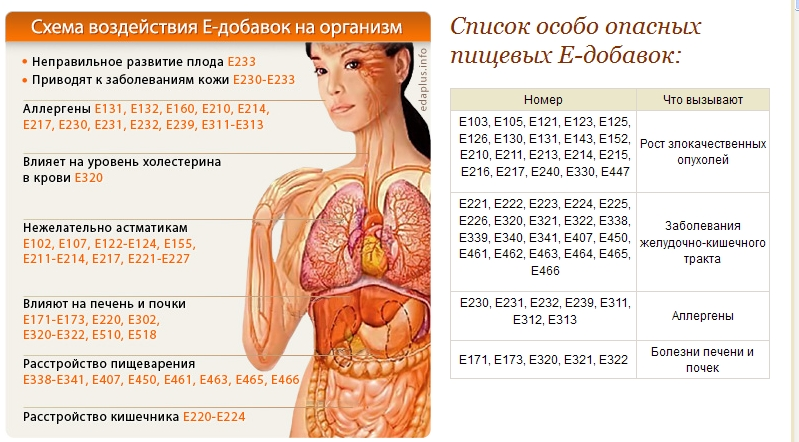

Полный каталог пищевых добавок

В н и м а н и е !!!
|
 |
| № | Уровень опасности |
Полное название | Тип | Используются в | Влияние на организм | Запрещен в странах |
| Красители | ||||||
| Е100 | безвреден | Куркумин | Краситель / оранжевый, желтый / натуральный | Кондитерских изделиях, ликёров, мясных блюд | ||
| Е101 | безвреден | Рибофлавин (витамин В2) | Краситель / желтый | Малина, алыча, земляника, айва, яблоки, абрикосы, баклажаны, перец, петрушка, спаржа, укроп, фасоль, салат | Влияет на усвоение белков и углеводов, участвует в синтезе ряда ферментов, обеспечивающих транспорт кислорода в организме | |
| Е102 | очень опасен | Татразин | краситель / золотисто-желтый | Мороженное, кондитерских изделиях, конфетах, желе, пюре, супах, йогуртах, горчице, напитках |
Мигрень, зуд, раздражительность, нарушение зрения, пищевая аллергия, заболевания щитовидной железы, нарушение сна |
Украина, ЕС |
| Е103 | опасен | Алканет, алканин (Alkanet) | Краситель / красно-бордовый/ получаемый экстракцией из корней Alkanna tinctoria | Канцерогенный эффект (вызывает рак) | Россия | |
| Е104 | очень опасен | Желтый хинолиновый | Краситель / желто-зелёный | Копченой рыбе, цветных драже, леденцах от кашля, жвачках | Гиперактивное поведения у детей, воспаление кожи | Австралия, Япония, Норвегия, США. |
| Е105 | опасен | Рост злокачественных опухолей | ||||
| Е107 | опасен | Желтый 2 G | Краситель/ желтый | аллергическая реакция, бронхиальная астма | Россия, Австрия, Норвегия, Швеция, Швейцария, Япония | |
| Е110 | опасен | Желтый “солнечный закат” FCF, оранжево-желтый S | Краситель / ярко-оранжевый | Конфетной глазуре, джемах, напитках, пакетированных супах,, восточных пряностях, соусах и пр. | аллергическая реакция, заложенность носа, насморк, тошнота, боли в животе, гиперактивность | |
| Е116 | запрещен | пропиловый эфир | консерванты | Кондитерские и мясные изделия | Пищевое отравление | Россия |
| Е117 | запрещен | натриевая соль | консерванты | Кондитерские и мясные изделия | Пищевое отравление | Россия |
| Е121 | запрещен | Цитрусовый красный | Краситель | Рост злокачественных опухолей | ||
| Е122 | Азорубин | Краситель / малиновый | ||||
| Е123 | запрещен | Амарант | Краситель анионный / от тёмно-красного до фиолетового цвета, | Окрашивании натуральных и синтетических тканей, кожи, бумаги и фенолформальдегидных смопасен | пороки развития у плода, имеет канцерогенные свойства (вызывает рак) | РФ |
| Е124 | опасен | Понсо 4R | Краситель / кошенилевый красный | Салатных заправках, десертных топингах, кексах, бисквитах, творожных изделиях, салями | Заболевания желудочно-кишечного тракта, может вызвать рак, приступы астмы | |
| Е125 | запрещен | Понсо, пунцовый SX (Ponceau SX) |
Рост злокачественных опухолей | Россия, Украина |
||
| Е126 | опасен | Рост злокачественных опухолей | ||||
| Е127 | опасен | Эритрозин | Краситель / голубовато-розовый | Консервированных фруктах, сухом печенье, засахаренных вишнях,
полуфабрикатных бисквитах, оболочках для сосисок зубных паст, румян, медицинских препаратов |
Астма, гиперактивность, может оказывать вредное воздействие на печень, сердце, щитовидную железу, репродуктивную функцию, желудок, имеет канцерогенный эффект | |
| Е128 | особо опасен |
Красный 2G (Red 2G). |
Краситель / красный | Сосисках, колбасе, измельченном мясе | Является генотоксичным соединением, то есть имеющим способность
вызывать изменения в генах - онкологические заболевания; - аномалии развития плода; - врожденные патологии. |
Россия |
| Е129 | опасен | Красный очаровательный АС |
Краситель / красный, оранжевый | Кондитерских изделиях, лекарствах,, косметических средствах, губной помаде | канцерогенный эффект (вызывает рак), аллергию различных видов.
|
Европа |
| Е130 | опасен | Рост злокачественных опухолей | ||||
| Е131 | запрещен | Синий патентованный V(Patent Blue V) | Краситель / голубой или фиолетовый | Фарше, колбасах, мясных изделиях, а так же применяется как краска используемая в медицинских диагностических процедурах | Рост злокачественных опухолей, астма, желудочно-кишечные расстройства, анафилаксия крапивница, гиперактивность, аллергические реакции |
ЕС, США. |
| Е132 | Индиготин, индигокармин ( Indigotine, Indigo Carmine) |
Краситель /синий | Бутылочных безалкогольных напитках, сладостях, сухом печенье,
кондитерских изделиях, мороженом, выпечке, ополаскивателе для волос, краске для теста, таблетках и капсулах (как краситель) |
Астма; аллергические реакции; гиперактивность проблемы с сердцем; не рекомендуется детям; имеет канцерогенный эффект | ||
| Е133 | Синий блестящий FCF | Краситель / голубой / синтетический | Рост злокачественных опухолей | ЕС, США | ||
| Е140 | безвреден | Хлорофилл | Краситель / зеленый / натуральный | Мороженое, кремах, молочных десертов, соусах, майонезе | Россия | |
| Е143 | опасен | Рост злокачественных опухолей | ||||
| Е151 | Черный блестящий | Краситель / фиолетовый | ||||
| Е152 | опасен | Уголь | Краситель | Рост злокачественных опухолей | ||
| Е153 | опасен | Уголь растительный (Vegetable Carbon) |
Краситель | канцерогенный эффект (вызывает рак) | Россия | |
| Е154 | запрещен | Коричневый FK (Brown FK) |
Краситель | нарушает нормальное артериальное давление | Россия | |
| Е155 | запрещен | Коричневый HT (Brown HT) |
Краситель | Россия | ||
| Е164 | Шафран (Saffron) |
Краситель | ||||
| Е166 | запрещен | Сандаловое дерево (Sandalwood) | Краситель | Россия | ||
| Е171 | опасен | Диоксид титана | Краситель / отбеливающие свойства | Креме для загара, белых частях крабовых палочек |
Рак кожи, заболевание печени и почек |
|
| Е173 | не установлено | Алюминий (Aluminium) | Краситель | Заболевание печени и почек | Россия | |
| Е174 | не установлено | Серебропасен | Краситель | Россия | ||
| Е175 | опасен | Золотопасен | Краситель | Россия | ||
| Е180 | опасен | Рубиновый литол ВК (Lithol Rubine BK) |
Краситель | Россия | ||
| Е182 | запрещен | Орсейл, орсин( Orchil) | Краситель | Россия | ||
| Консерванты | ||||||
| Е209 | опасен | Пара-гидроксибензойной кислоты гептиловый эфир (Heptyl p-hydroxybenzoate) | Консервант | Россия | ||
| Е210 | опасен | Бензойная кислота | Консервант / природный содержащийся в клюкве и бруснике | Напитках, плодово-ягодной продукции, рыбопродуктах, кетчупах, в консервации, парфюмерии | Рост злокачественных опухолей канцерогенный эффект |
|
| Е211 | опасен | Бензоат натрия | Консервант/ антибиотик, усилитель цвета | Соусах для барбекью, прессервах, соевых соусах, "фруктовых" драже, леденцах | Рост злокачественных опухолей, аллергия | |
| Е213 | опасен | Бензоат кальция | Консервант | Рост злокачественных опухолей | Россия | |
| Е214 | запрещен | канцерогенный эффект (вызывает рак) | Консервант | Рост злокачественных опухолей | Россия | |
| Е215 | опасен | Пара-гидроксибензойной кислоты этилового эфира натриевая соль (Sodium Ethyl p-hydroxybenzoate) | Консервант | Рост злокачественных опухолей | Россия | |
| Е216 | опасен | Пара-оксибензойной кислоты пропиловый эфир |
Консервант | Конфеты, шоколад с начинкой, мясные продукты, покрытые желе паштеты, супы и бульоны. | Рост злокачественных опухолей, головная боль, раздражительность, утомляемость,печеночные колики, пищевое отравление, плохо влияют на имунную систему | Россия |
| Е217 | опасен | Пара-оксибензойной кислоты пропилового эфира натриевая соль | Консервант | Конфеты, шоколад с начинкой, мясные продукты, покрытые желе паштеты, супы и бульоны. | Рост злокачественных опухолей, головная боль, раздражительность, утомляемость,печеночные колики, пищевое отравление, плохо влияют на имунную систему | Россия |
| Е219 | запрещен | Пара-гидроксибензойной кислоты метилового эфира натриевая соль(Sodium Methyl p-hydroxybenzoate) | Консервант | Рост злокачественных опухолей | Россия | |
| Е220 | опасен | Диоксид серы | Консервант / бесцветный газ / тормозит потемнение овощей и фруктов / антимикробное средство | Пиво, вино, б/а напитки, сухофрукты, соки, алкогольные напитки,
уксус, картофельные продукты, мясные продукты, а так же для консервирования продуктов, подвергаемых дальнейшей переработке |
Головная боль, тошнота, понос, тяжесть в желудке,аллергические реакции (насморк, кашель, охриплость, першение в горле) | |
| Е221 | опасен | Сульфит натрия (Sodium Sulphite) |
Консервант / тормозит ферментативное потемнение овощей и фруктов, замедляет образование меланоидинов | Заболевания желудочно-кишечного тракта | ||
| Е222 | опасен | Гидросульфит натрия (дитионит натрия) | Консервант / антиокислитель / Белый с сероватым оттенком порошок | Пищевых продуктах, а так же в легкой, химической промышленности | Заболевания желудочно-кишечного тракта | |
| Е223 | опасен | Пиросульфит натрия | Консервант / белый кристаллический порошок. | Напитках, винах, мармеладе, зефире, повидле, джемах, изюме, томатном пюре, плодово-ягодном пюре, сушеных фруктах (подлежащих термообработке), полуфабрикатах из ягод (клубника, малина, вишня и др) |
Заболевания желудочно-кишечного тракта, аллергические реакции | |
| Е224 | опасен | Пиросульфит калия | Консервант / антиокислитель | Вине | Заболевания желудочно-кишечного тракта | |
| Е225 | опасен | Сульфит калия | Консервант | Заболевания желудочно-кишечного тракта | Россия | |
| Е226 | опасен | Сульфит кальция (Calcium Sulphite) |
Консервант | Заболевания желудочно-кишечного тракта | Россия | |
| Е227 | опасен | Гидросульфит кальция (Calcium Hydrogen Sulphite) |
Консервант | Россия | ||
| Е228 | опасен | Гидросульфит калия (бисульфит калия) (Potassium Hydrogen Sulphite) | Консервант | Россия | ||
| Е230 | опасен | Бифенил, дифенил (Biphenyl, Diphenyl) |
Консервант | Рост злокачественных опухолей, аллергия | Россия | |
| Е231 | опасен | Ортофенилфенол (Orthophenyl Phenol) | Консервант | Аллергия, головная боль, раздражительность, утомляемость,печеночные колики, плохо влияют на имунную систему, могут провоцировать возникновение злокачественных опухолей | Россия | |
| Е232 | опасен | Ортофенилфенол натрия (Sodium Orthophenyl Phenol) | Консервант | Аллергия, головная боль, раздражительность, утомляемость,печеночные колики, плохо влияют на имунную систему, могут провоцировать возникновение злокачественных опухолей | Россия | |
| Е233 | опасен | Тиабендазол (Thiabendazole) | Консервант | Россия | ||
| Е234 | Низин(Nisin) | Консервант / природный антибиотик | Молочных продуктах, сырах, овощных и фруктовых консервах | |||
| Е237 | Формиат натрия | Консервант | Россия | |||
| Е238 | опасен | Формиат кальция | Консервант | Россия | ||
| Е239 | опасен | Гексаметил- ентетрамин |
Консервант | консервах зернистой икры лососевых рыб и для выращивания маточных культур дрожжей. | Аллергия | |
| Е240 | Запр | Формальдегид | Консервант / антисептик / газообразное бесцветное вещество с острым запахом / смертельный яд |
консервации биологических материалов (создание анатомических
и других биомоделей), а также для изготовления пластмасс, взрывчатых веществ, пластификаторов и вакцин |
Рост злокачественных опухолей | Россия |
| Е241 | опасен | Гваяковая смола (Gum Guaicum) |
Консервант | Россия | ||
| Е242 | Диметилдикарбонат (Dimethyl Dicarbonate) |
Консервант | безалкогольных напитках, вине | |||
| Е249 | Нитрит калия (Potassium Nitrite) |
Консервант / краситель / белый или слегка желтоватый кристаллический порошок / яд |
мясных и рыбных изделиях | Рост злокачественных опухолей | ||
| Е250 | Нитрит натрия | Консервант краситель, приправа / использующийся для сухой консервации мяса и стабилизации его красного цвета | беконе (особенно жаренном), сосисках, ветчине, копченом мясе и рыбных изделиях | -Головная боль, - кислородное голодание организма (гипоксия); - уменьшение содержания витаминов в организма; - пищевые отравления с возможным летальным исходом - раздражительность, -утомляемость, - печеночные колики, -повышенная возбудимость нервной системы у детей - плохо влияют на имунную систему, - может провоцировать возникновение злокачественных опухолей |
ЕС |
|
| Е251 | Нитрат натрия | Консервант | Головная боль, раздражительность, утомляемость,печеночные колики;, посинение губ, ногтей, кожи, судороги, понос, головокружение, затруднение дыхания, плохо влияют на имунную систему, могут провоцировать возникновение злокачественных опухолей | |||
| Е252 | опасен | Нитрат калия (калиевая селитра) | Консервант / Бесцветный -бело кристаллический порошок, без запаха | производстве стекла, пищевых продуктов, минеральных удобрений. | Рост злокачественных опухолей | Россия |
| Е253 | опасен | Россия | ||||
| Е264 | опасен | Россия | ||||
| Е281 | опасен | Россия | ||||
| Е282 | опасен | Россия | ||||
| Е283 | опасен | Россия | ||||
| Е300 | ||||||
| Е301 | ||||||
| Е302 | опасен | Россия | ||||
| Е303 | опасен | Россия | ||||
| Е304 | опасен | Россия | ||||
| Е305 | опасен | Россия | ||||
| Е308 | опасен | Россия | ||||
| Е309 | опасен | Россия | ||||
| Е310 | опасен | Россия | ||||
| Е311 | опасен | Антиокислитель | Аллергия, приступы астмы, повышение содержания холестерина | Россия | ||
| Е312 | опасен | Аллергия | Россия | |||
| Е313 | опасен | Аллергия | Россия | |||
| Е314 | опасен | Россия | ||||
| Е317 | опасен | Россия | ||||
| Е318 | опасен | Россия | ||||
| Е320 | опасен | антиоксидант | Антиокислитель / для замедления окислительного процесса в жировых и масляных смесях | продукты с содержанием жира; жевательные резинки. | Заболевания желудочно-кишечного тракта, печени, почек; вызавает приступы астмы и повышение содержания холестерина | |
| Е321 | опасен | Антиокислитель | Заболевания желудочно-кишечного тракта, печени, почек; вызавает приступы астмы и повышение содержания холестерина | |||
| Е322 | опасен | Заболевания желудочно-кишечного тракта, печени и почек | ||||
| Е323 | опасен | Россия | ||||
| Е324 | опасен | Россия | ||||
| Е325 | опасен | Россия | ||||
| Е328 | опасен | Россия | ||||
| Е329 | опасен | Россия | ||||
| Е330 | опасен | Рост злокачественных опухолей | ||||
| Е338 | опасен | Заболевания желудочно-кишечного тракта | ||||
| Е339 | опасен | Заболевания желудочно-кишечного тракта | ||||
| Е340 | опасен | Заболевания желудочно-кишечного тракта | ||||
| Е341 | опасен | Заболевания желудочно-кишечного тракта | ||||
| Е343 | опасен | Россия | ||||
| Е344 | опасен | Россия | ||||
| Е345 | опасен | Россия | ||||
| Е349 | опасен | Россия | ||||
| Е350 | опасен | Россия | ||||
| Е351 | опасен | Россия | ||||
| Е352 | опасен | Россия | ||||
| Е355 | опасен | Россия | ||||
| Е356 | опасен | Россия | ||||
| Е357 | опасен | Россия | ||||
| Е359 | опасен | Россия | ||||
| Е365 | опасен | Россия | ||||
| Е366 | опасен | Россия | ||||
| Е367 | опасен | Россия | ||||
| Е368 | опасен | Россия | ||||
| Е370 | опасен | Россия | ||||
| Е375 | опасен | Россия | ||||
| Е381 | опасен | Россия | ||||
| Е384 | опасен | Россия | ||||
| Е387 | опасен | Россия | ||||
| Е388 | опасен | Россия | ||||
| Е389 | опасен | Россия | ||||
| Е390 | опасен | Россия | ||||
| Е399 | опасен | |||||
| Е400- Е499 |
загустители, стабилизаторы / для повышения вязкости продукта | майонез йогуртовые культуры |
Заболевания пищевой системы | |||
| Е403 | опасен | Россия | ||||
| Е407 | опасен | Заболевания желудочно-кишечного тракта | ||||
| Е408 | опасен | Россия | ||||
| Е418 | опасен | Россия | ||||
| Е419 | опасен | Россия | ||||
| Е429 | опасен | Россия | ||||
| Е430 | опасен | Россия | ||||
| Е431 | опасен | Россия | ||||
| Е432 | опасен | Россия | ||||
| Е433 | опасен | Россия | ||||
| Е434 | опасен | Россия | ||||
| Е435 | опасен | Россия | ||||
| Е436 | опасен | Россия | ||||
| Е441 | опасен | Россия | ||||
| Е442 | опасен | Россия | ||||
| Е443 | опасен | Россия | ||||
| Е444 | опасен | Россия | ||||
| Е446 | опасен | Россия | ||||
| Е447 | опасен | Рост злокачественных опухолей | ||||
| Е450 | опасен | Заболевания желудочно-кишечного тракта | ||||
| Е461 | опасен | Заболевания желудочно-кишечного тракта | ||||
| Е462 | опасен | Заболевания желудочно-кишечного тракта | Россия | |||
| Е463 | опасен | Заболевания желудочно-кишечного тракта | Россия | |||
| Е464 | опасен | Заболевания желудочно-кишечного тракта | ||||
| Е465 | опасен | Заболевания желудочно-кишечного тракта | Россия | |||
| Е466 | опасен | Заболевания желудочно-кишечного тракта | ||||
| Е467 | опасен | Россия | ||||
| Е474 | опасен | Россия | ||||
| Е476 | опасен | Россия | ||||
| Е477 | опасен | Россия | ||||
| Е478 | опасен | Россия | ||||
| Е479 | опасен | Россия | ||||
| Е480 | опасен | Россия | ||||
| Е482 | опасен | Россия | ||||
| Е483 | опасен | Россия | ||||
| Е484 | опасен | Россия | ||||
| Е485 | опасен | Россия | ||||
| Е486 | опасен | Россия | ||||
| Е487 | опасен | Россия | ||||
| Е488 | опасен | Россия | ||||
| Е489 | опасен | Россия | ||||
| Е491 | опасен | Россия | ||||
| Е492 | опасен | Россия | ||||
| Е493 | опасен | Россия | ||||
| Е494 | опасен | Россия | ||||
| Е495 | опасен | Россия | ||||
| Е496 | опасен | Россия | ||||
| Е500- Е599 |
Эмульгаторы | Отрицательно влияют на печень, вызывают растройство желудка | ||||
| Е505 | опасен | Россия | ||||
| Е510 | особо опасен | эмульгатор /, создают однородную массу при сочетании несмешиваемых продуктов, например, воды и масла. | Отрицательно влияют на печень, вызывают растройство желудка |
|
||
| Е512 | Россия | |||||
| Е513 | особо опасен | эмульгатор /, создают однородную массу при сочетании несмешиваемых продуктов, например, воды и масла. | Отрицательно влияют на печень, вызывают растройство желудка | |||
| Россия | ||||||
| Е516 | Россия | |||||
| Е517 | Россия | |||||
| Е518 | Россия | |||||
| Е519 | Россия | |||||
| Е520 | Россия | |||||
| Е521 | Россия | |||||
| Е522 | Россия | |||||
| Е523 | Россия | |||||
| Е527 | особо опасен | эмульгатор /, создают однородную массу при сочетании несмешиваемых продуктов, например, воды и масла. | Отрицательно влияют на печень, вызывают растройство желудка | |||
| Е535 | Россия | |||||
| Е537 | Россия | |||||
| Е538 | Россия | |||||
| Е541 | Россия | |||||
| Е542 | Россия | |||||
| Е550 | Россия | |||||
| Е552 | Россия | |||||
| Е554 | Россия | |||||
| Е555 | Россия | |||||
| Е556 | Россия | |||||
| Е557 | Россия | |||||
| Е559 | Россия | |||||
| Е560 | Россия | |||||
| Е574 | Россия | |||||
| Е576 | Россия | |||||
| Е577 | Россия | |||||
| Е579 | Россия | |||||
| Е580 | Россия | |||||
| Е622 | запрещен | Глутамат калия | Россия, Украина |
|||
| Е623 | Россия | |||||
| Е624 | Россия | |||||
| Е625 | Россия | |||||
| Е628 | Россия | |||||
| Е629 | Россия | |||||
| Е632 | Россия | |||||
| Е633 | Россия | |||||
| Е634 | Россия | |||||
| Е635 | Россия | |||||
| Е640 | Россия | |||||
| Е641 | Россия | |||||
| Е906 | Россия | |||||
| Е908 | Россия | |||||
| Е911 | Россия | |||||
| Е913 | Россия | |||||
| Е916 | Россия | |||||
| Е917 | Россия | |||||
| Е918 | Россия | |||||
| Е919 | Россия | |||||
| Е922 | Россия | |||||
| Е926 | Россия | |||||
| Е929 | Россия | |||||
| Е942 | Россия | |||||
| Е943 | Россия | |||||
| Е944 | Россия | |||||
| Е945 | Россия | |||||
| Е946 | Россия | |||||
| Е951 | аспартам | синтетический сахарозаменитель | - истощение запасов серотонина в коре головного мозга; - развитие маниакальной депрессии, припадков паники, насилия (при чрезмерном употреблении). |
|||
| Е957 | Россия | |||||
| Е959 | Россия | |||||
| Е1000 | Россия | |||||
| Е1001 | Россия | |||||
| Е1105 | Россия | |||||
| Е1503 | Россия | |||||
| Е1521 | Россия | |||||
Источник : http://edaplus.info/e-additive.html